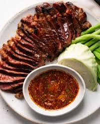

Crying Tiger Steak

Recipe from Ian Kewks
Thai Crying Tiger Steak is a mouthwatering dish that is sure to please any steak lover. With its umami-bomb marinade and spicy dipping sauce, this beef dish is perfect for any occasion!
Ingredients
- 600-800 g steak
- 2 tbsp neutral oil
Steak Marinade
- 1 tbsp soy sauce
- 1 tbsp oyster sauce
- 1 tbsp neutral oil
- 0.5 tbsp palm sugar
- .25 tsp ground black pepper
Nam Jim Jeaw
- 1.5 tsp uncooked rice grains, toasted and ground
- 2 tbsp lime juice
- 1 tbsp fish sauce
- 1 tbsp tamarind paste
- 1 tbsp palm sugar
- 1 tbsp cilantro, chopped
- 1-2 tsp chili flakes
- 0.5 shallot, cut into wedges
Directions
- Mix together the soy sauce, oyster sauce, oil, palm sugar, and ground black pepper in a bowl until combined. Let the steaks marinate for at least one hour to overnight in the fridge.
- Once marinated, remove the steak from the fridge and let come to room temperature.
- Heat a heavy bottom pan or iron skillet over medium-high heat with 2 tbsp of neutral oil. Fry the marinated steaks until you reach your desired doneness, flipping frequently to avoid overly burning the sugars.
- Set aside, and let rest for at least 10 minutes while you prepare the dipping sauce.
- Heat a dry pan over medium heat. Once hot, add the glutinous rice to the pan and toss/stir continuously until the grains have become golden brown in color.
- Transfer the toasted grains to a mortar and pestle and grind the rice until you achieve a coarse powder.
- Add in the lime juice, fish sauce, tamarind paste, palm sugar, chopped cilantro, Thai chili flakes, and shallots. Mix until well combined and adjust accordingly to tastes.
- Once the steak has adequately rested, slice into strips. Serve the steak alongside the nam jim jeaw and fresh vegetables. Enjoy!
Home